Himanshu Jhawar (hj2713)
COMS4732W Computer Vision 2
GitHub Repository: https://github.com/hj2713/CV2/tree/main/HW4
(x, y) ranging [0, 1].L=10, generating a 42-dimensional input feature vector.Linear(256) → ReLU.Linear(256, 3) → Sigmoid mapping features to (r, g, b) pixel colors clamped to [0, 1].1e-2 (0.01).Test Image 1 Progression
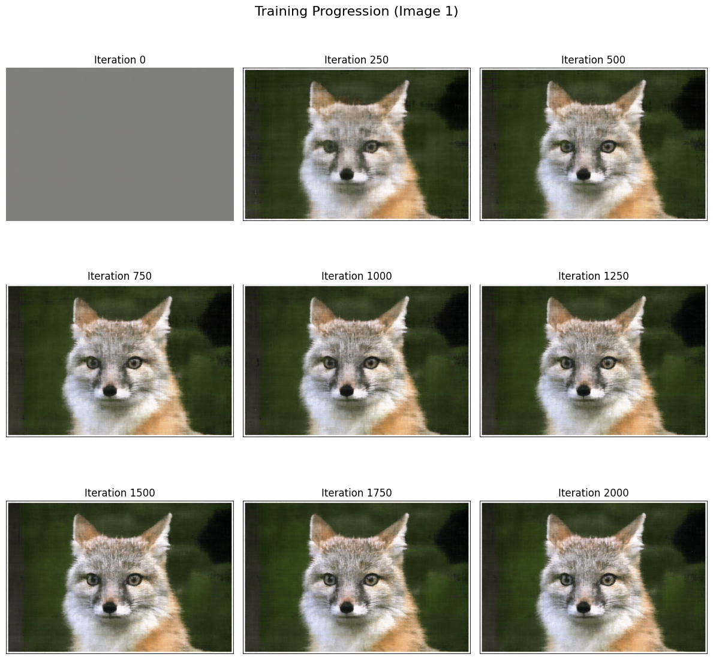
Custom Image 2 Progression
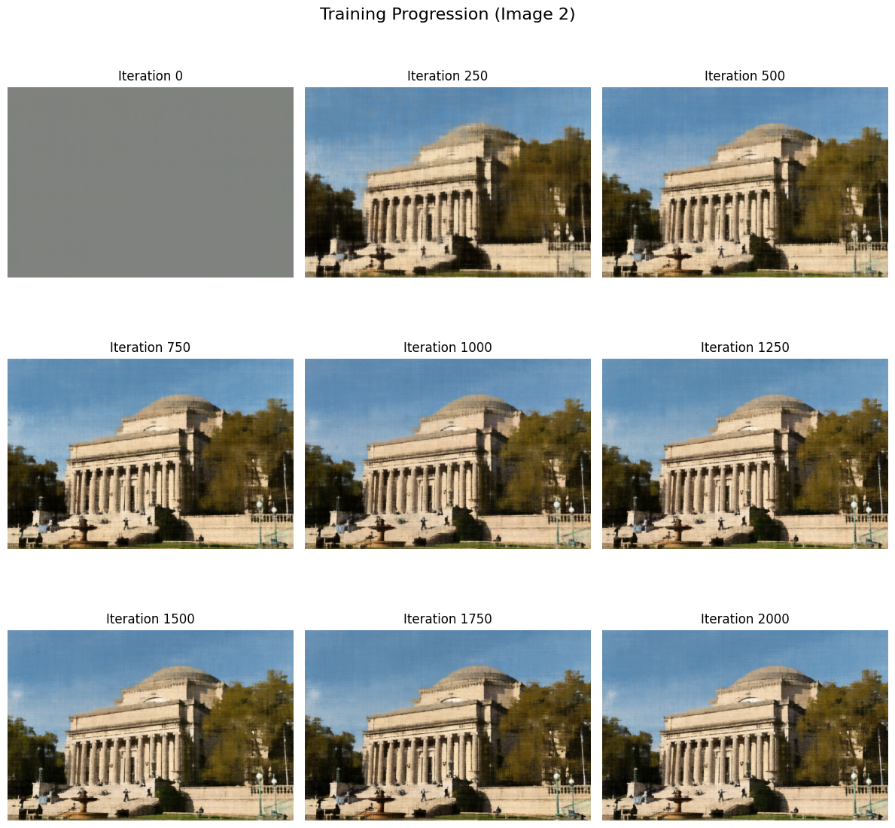
A 2x2 grid analyzing network capacity. Positional Encoding L regulates how high-frequency sharp details the network can learn, whilst width dictates global memory capacity.
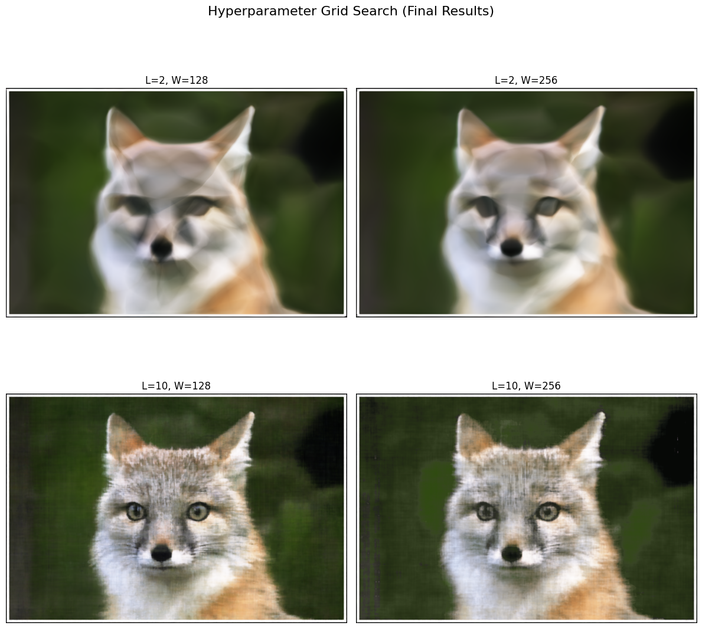
Peak Signal to Noise Ratio graph representing algorithmic confidence converging cleanly above 30 dB.
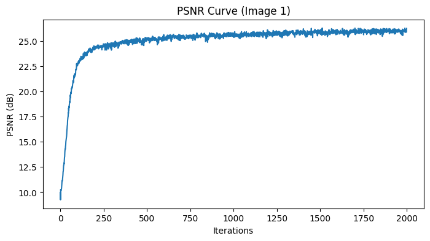
Image 1 Validation Trajectory
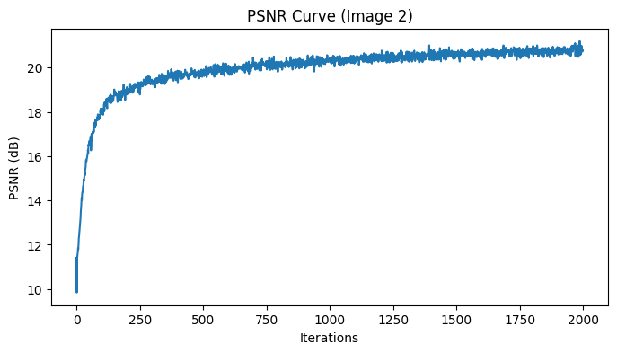
Image 2 Validation Trajectory
c2w transforms and focal distances, physical rays are reverse-projected out of the sensor. The RaysData class precomputes millions of theoretical ray_o (Ray Origins) and ray_d (Ray Directions) into a unified PyTorch dataset pool for efficient 10,000-ray memory batching.sample_along_rays slices every theoretical ray line into exactly 64 finite distance fragments spanning the mathematical bounding box (near=2.0, far=6.0). By intentionally applying jitter algorithms offset noise across distance batches during training (perturb=True), the model avoids discrete depth over-fitting and establishes true continuous volume approximations.xyz encoding bypass coordinates are manually concatenated at Layer 5 (Skip Connection).ray_d vector is withheld entirely until the final structural block, wherein it merges with semantic features to uniquely map viewport-specific physical attributes like plastic shading glares across RGB pixels.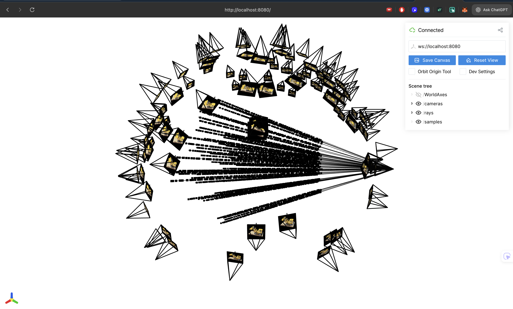
Confirming spherical origins converging physically through the origin of the Lego truck utilizing ~100 sampled rays.
Reconstructing the visual trajectory directly from validation snapshots evaluated heavily every 500 epochs.
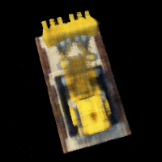
Epoch 1000
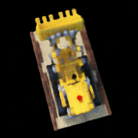
Epoch 2500
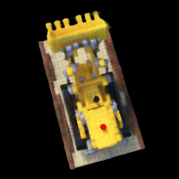
Epoch 4000
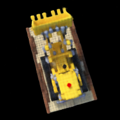
Epoch 6000
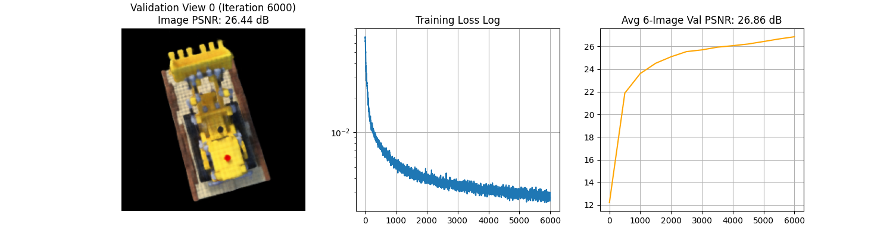
Targeting minimum > 23 PSNR accuracy across completely un-seen angles. Graph visualizes validation PSNR on the entire isolated 6-image validation set.
Loading weights off pure train_3d iterations to execute fully synthetic continuous 60-camera physical orbits utilizing vis_orbit.py mapping.
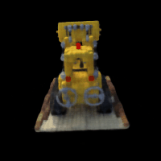
100% Synthetic 360-Degree Continuous Novel Render.
COMS4732W Computer Vision 2 · HW4 · Himanshu Jhawar (hj2713)